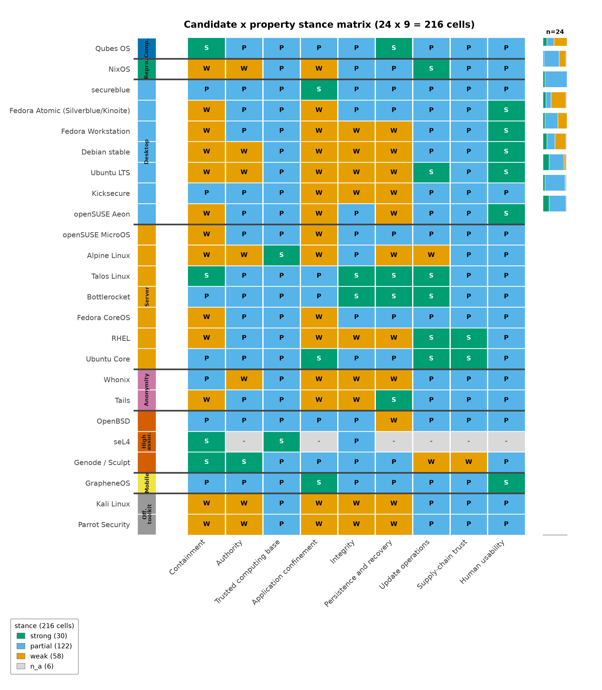
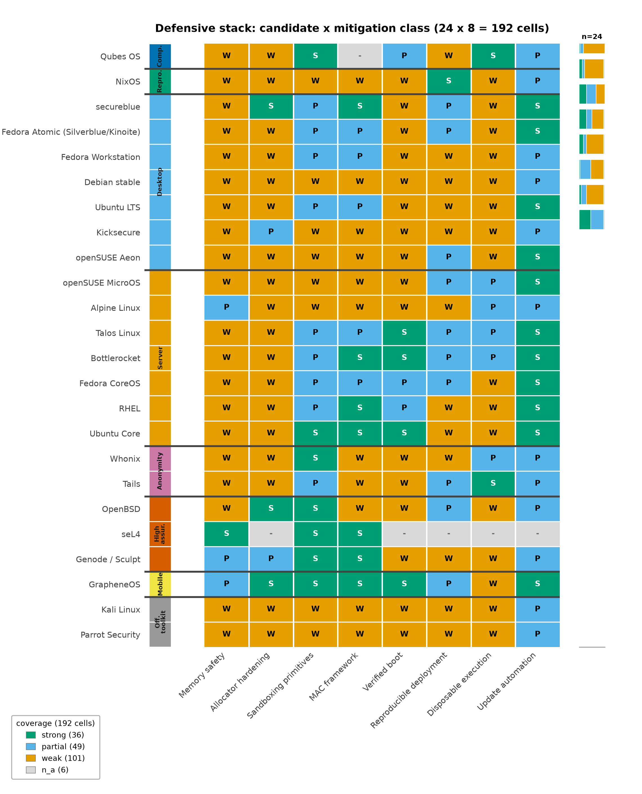

Evaluation Framework: Properties over Labels
Why not a distribution label
“Secure Linux” is not a property of a distribution; it is an outcome of a deployment matching a threat model. Distribution labels hide exactly the heterogeneity that matters: one candidate may pair a strong containment architecture with a weak update-operations story, another may have excellent supply-chain discipline and no runtime confinement at all. A single label collapses those differences into a ranking question that no available evidence answers — and ranking invites the numeric composite scores (“Qubes 9.4” style) that this review refuses, for reasons given below. The alternative, inherited from the source assessment, is to evaluate every candidate against a fixed set of properties, each phrased as a question a deployment can be interrogated with.
The nine properties
[@tbl:properties] states the 9 properties used throughout the review, with the question each property asks and its security significance in this threat model.
| Property | Question to ask | Security significance |
|---|---|---|
| Containment | What remains protected after the browser or agent is fully controlled? | A prevention failure should not automatically become whole-machine compromise. |
| Authority | What can the process already read, transmit, sign, or change? | Excessive legitimate permissions can bypass the need for an exploit; this is the authorized-misuse axis from [@sec:threat_model]. |
| Trusted computing base | Which privileged components must all remain correct? | A small, carefully constrained boundary is preferable to many privileged integrations; it is also what patch operations must cover [saltzer1975]. |
| Application confinement | Are permissions restrictive by default and actually compatible with the applications? | A theoretical policy is not protection if users routinely disable it. |
| Integrity | What verifies the boot chain and deployed software, and who holds the keys? | Authenticity, runtime integrity, and resistance to rollback are distinct properties, not one checkbox. |
| Persistence and recovery | Which state survives replacement or reboot? | Rebuilding the system is insufficient if malicious user state or stolen credentials survive. |
| Update operations | How quickly do fixes reach every active environment? | A strong architecture with neglected templates or pinned dependencies can lose its advantage — the QSB-118 lesson in [@sec:qubes]. |
| Supply-chain trust | Who may introduce or approve new executable code? | Reproducibility and signatures answer different questions from whether code is benign [nixos_reproducibility]. |
| Human usability | Will the owner preserve the intended boundaries during real work? | Sustainable security is more valuable than a configuration abandoned under pressure. |
The properties are evaluation criteria, not a scoring model. They overlap deliberately where the underlying security properties genuinely interact (authority with containment, trusted computing base with update operations), and the overlap is visible in the analysis rather than averaged away.
Parallel threat-modeling structures, and why a property matrix still wins for OS work
The property matrix is not the only structured lens for agentic systems, and the 2025–2026 standardization wave produced alternatives worth naming. OWASP’s Agentic AI Threats and Mitigations guide catalogs threat scenarios for agent systems — memory manipulation, tool misuse, identity and privilege confusion — and its December 2025 Top 10 for Agentic Applications distills them into a ranked practitioner list [owasp_agentic_tm; owasp_agentic_top10]. CSA’s MAESTRO frames agentic risk as seven interdependent layers spanning the agent’s reasoning, tools, and multi-agent interconnects [csa_maestro], and its swarm governance work extends the framing with zero-trust patterns such as short-lived agent identities [csa_securing_swarm]. These structures earn their place: they enumerate agent-stack threats with a granularity the nine properties deliberately do not attempt, and the synthesis chapters borrow from them where agent-internal surfaces dominate ([@sec:cognitive_security]; [@sec:orchestration]).
For operating-system evaluation, though, the property matrix is the better lens. First, the alternatives are keyed to the agent stack — memory, tools, orchestration layers — where an OS review needs the boundary keyed to what a kernel or hypervisor can actually enforce: containment, authority, and the trust base that patches must cover. The 2026 incident record supports the distinction: the AISI and OpenAI–Hugging Face incidents were bounded by sandboxes, connectivity policy, and revocation — OS-level mechanisms — while the persuasion of a human maintainer traveled through an entirely different channel [aisi_incident_report; openai_hf_incident]. A taxonomy that does not force that separation cannot rank platforms. Second, the frameworks are threat lists, not evaluation instruments: they say what can go wrong, not what a candidate’s documented design provides, whereas the nine properties convert to per-candidate stances that can be diffed, tested, and refreshed as advisories land ([@sec:qubes]; [@sec:nixos]). Third, they abstract away the trusted computing base — which the 2026 advisory record (QSB-118, the Nix advisories) shows to be decisive under automation pressure.
The evidence discipline is the same one the threat model applies to its baseline. The NCSC’s original AI cyber-threat assessment (January 2024) and its “From Now to 2027” successor (May 2025) supply the capability horizon this framework evaluates against [ncsc_ai_threat_2024; ncsc_ai_cyber_threat] — faster exploitation of known vulnerability classes, not assumed universal autonomous compromise — rather than any single vendor’s capability narrative.
The anti-scoring stance
There is no adequate evidence in this review for assigning meaningful universal scores, and raw vulnerability counts would not resolve the comparison either: they conflate disclosure volume with exposure, and they are confounded by project size, patch latency, and measurement effort. Worse, composite scores create false precision across incommensurable properties — trading a point of “usability” against a point of “containment” implies an exchange rate that no operator’s actual threat model supplies. This is the same discipline that separates reproducible deployment from verified reproducible builds [nixos_reproducibility] and authenticity from provenance: properties that answer different questions must stay separate.
Instead, every candidate–property cell receives one qualitative
stance: strong, partial,
weak, or n_a. A strong
stance means the documented design directly and coherently addresses the
property in this threat model. partial means the property
is addressed with material conditions, integration gaps, or operator
obligations attached. weak means the documented design
provides little of what the property asks. n_a marks
candidates for which the property is out of scope or unverified by
available evidence — used rather than guessed, because absence of a
confirmed feature in this review is not proof the feature is
unavailable.
How the matrix is constructed and refreshed
The matrix lives as data, not prose. In
src/agentic_os_security/registry.py, each candidate carries
a property_stance dictionary keyed by all 9 property
identifiers, alongside a design summary, a named limitation, and an
assessment. The pipeline emits the full 24-candidate × 9-property table
to output/data/evaluation_matrix.csv — one row per pair —
and self-checks enforce stance-vocabulary validity and matrix
completeness before any figure is regenerated. Stances are assigned from
documented designs, official security documentation, project advisories,
and primary incident reports; vendor feature lists support
partial or strong stances only where the
project itself documents the mechanism, never as measured resistance
results.
Refresh is a deliberate operation: a stance changes when the underlying documentation, an advisory, or a release note changes — for example, a fixed advisory can move an update-operations stance, while a new integration gap documented by the project can move an application-confinement stance. Because the matrix is deterministic data with the review date 2026-09-10 stamped into the build, a future refresh produces a diffable artifact: added rows, changed stances, and the reasons, rather than rewritten narrative. [@fig:property_matrix] renders the current matrix.

The defensive stack: mitigation classes as a second lens
The candidate–property matrix answers “how does each platform score on the evaluation properties?” — but an operator choosing what combination of mechanisms to deploy also needs the complementary question: which mitigation classes does each candidate actually ship? Agent-execution infrastructure now standardizes on a recognizable stack of kernel primitives — sandboxing namespaces, restricted user namespaces, seccomp filters, egress proxies — while microvisor and unikernel candidates push different classes (verified boot, disposable execution) to their limits ([@sec:servers]). The defensive-stack matrix captures that second view as data.
In registry.py, MITIGATION_CLASSES defines
the eight mitigation classes — memory_safety (memory-safe
implementation languages), allocator_hardening (hardened
allocators and exploit mitigations), sandboxing_primitives
(namespaces, seccomp, capability confinement),
mac_framework (MAC frameworks), verified_boot
(authenticated boot chains), reproducible_deployment
(declarative, rebuildable state), disposable_execution
(ephemeral task environments), and update_automation
(prompt patch delivery). DEFENSIVE_STACK assigns every 24
candidate a stance in each class, using the same
strong/partial/weak/n_a
vocabulary as the property matrix, grounded in the candidates’
documented features and the 2026 research record (sandboxing stances
reflect documented namespace and seccomp practice; verified-boot stances
reflect measured-boot and Secure Boot implementations). The helper
defensive_stack_rows() emits the full 24-candidate ×
8-class table — 192 stance cells — and the analysis pipeline writes it
to output/data/defensive_stack.csv, where the same
self-checks that police the property matrix enforce vocabulary validity
and completeness. [@fig:defensive_stack] renders
the matrix as a heatmap with the eight candidate categories grouped and
a per-class coverage marginal.

Reading the two matrices together is the point. A candidate can hold
a strong containment stance (Qubes, from domain separation)
while its memory-safety stance reflects the mixed language base of its
tooling; a reproducibility-first candidate (NixOS) holds
strong reproducible-deployment and update-automation
stances while its sandboxing and MAC stances remain weaker ([@sec:nixos]); a
microvisor candidate may score strong on verified boot and
disposable execution while offering no MAC framework at all ([@sec:servers]).
Neither matrix substitutes for the other: the property matrix carries
the threat-model judgments, the defensive stack names the mechanism
inventory an operator composes from. Both are deterministic artifacts
stamped with the review date 2026-09-10, and both refresh by diffing
rows, not rewriting adjectives.
What the matrix buys
Three things. First, comparability without false precision: two candidates can be contrasted property by property, and the contrast shows where they differ (Qubes holds containment strongly and application confinement partially; NixOS holds update operations and supply-chain trust strongly and application confinement weakly) rather than by how much in aggregate. Second, auditability: each stance is a claim about documentation that a reader can check against the cited source, and the structural invariants are test-enforced — every candidate covers every property, every stance is in the vocabulary, and the matrix has 24 × 9 cells exactly. Third, scenario grounding: the per-scenario recommendations in [@sec:scenarios] select candidates by which properties the scenario’s threat model weights most, which is precisely what a label-based ranking cannot do.
Limitations of matrix thinking
A matrix is a discipline for judgment, not a substitute for it, and four limits should be kept in view.
- Stances are not measurements. Every cell is an
analytical judgment from documented designs [saltzer1975]; none is a
penetration-test result. The vocabulary encodes confidence in a
documented capability, not a measured resistance rate against a live
adversary. The defensive-stack stances inherit the same limit in sharper
form: a
strongsandboxing stance says the project documents and ships the mechanism, not that the mechanism holds against a named attacker. - Properties interact. A strong containment stance can be nullified by a weak update-operations stance if the containment mechanism itself ships unpatched; a strong integrity stance does not constrain what an authorized agent does with verified software. Cell-level reading without row-level synthesis will mislead, which is why the scenario chapters, not the matrix, carry the recommendations.
- Unverified defaults are a standing gap. Where this review could not verify a current default or security property, the cell says so; a future audit may legitimately move stances in either direction, and the diffability of the matrix is designed for exactly that.
- The matrix is frozen in time at 2026-09-10. Projects ship; advisories land; trajectories noted per candidate (for instance, the GUI-domain split in [@sec:qubes] and boot-integrity work in [@sec:nixos]) may convert into stronger stances at the next refresh. Low-confidence forecasting of those movements is handled in [@sec:forecast] rather than smuggled into current stances.
With the framework fixed, the next two sections apply it in depth to the two anchor platforms whose properties the rest of the architecture inherits: Qubes OS for containment [qubes_architecture] and NixOS for reproducible operations [nixos_wiki].